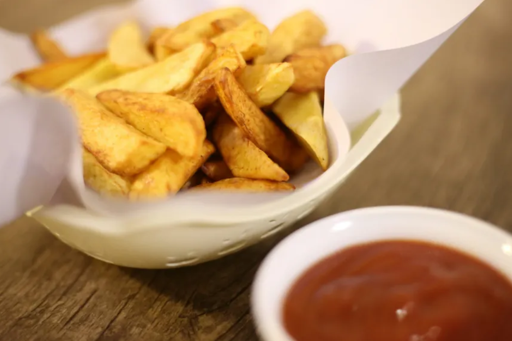

Receta de patatas fritas

Características
- Dificultad: Fácil
- Raciones: 2-3
- Tiempo: 25 min
- Coste: bajo
Ingredientes
| Ingrediente | Cantidad | Notas |
|---|---|---|
| Patatas | 300 g (3-4 unidades) | Para freír |
| Ajo | 1-2 dientes | Opcional |
| Aceite de oliva | 500 ml | freír |
| Sal y pimienta | Al gusto | Para sazonar |
Elaboración
Las patatas fritas son uno de los mejores acompañamientos. Lava las patatas y córtalas en rodajas finas, Calienta el aceite de oliva en una sartén, Fríe las patatas hasta que estén doradas y crujientes, Escurre el exceso de aceite y sazona con sal y pimienta al gusto.